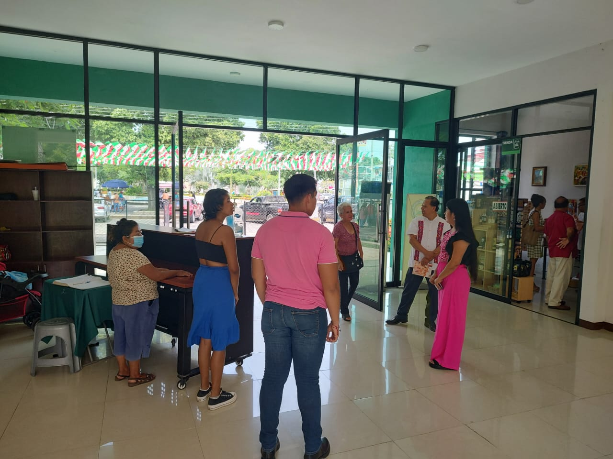

"Museo Regional Casa Verde de Tuxtepec"
Bienvenido al sitio oficial del Museo Regional Casa Verde de Tuxtepec, donde la historia y cultura de nuestra región se preservan y se comparten.
Explora las diferentes secciones de MuCaVe y descubre la riqueza cultural de nuestra región.